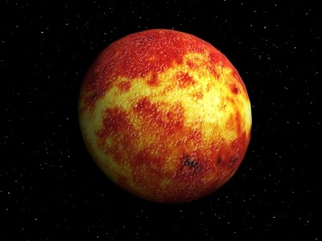

Merkurius mempunyai lintasan edar yang paling deket ke matahari. Pada siang hari, suhunya mencapai 400°C. Pada malam hari suhunya mencapai 180°C dibawah nol. Ukuran merkurius sedikit lebih besar dari pada bulan. Planet ini sulit diamati karena letaknya yang sangat dekat dengan matahari. Merkurius terkadang tampak di kaki langit sebelah barat ketika matahari baru tampak terbenam di bumi atau di sebelah timur ketika matahari akan terbit. Garis tengah planet merkurius sekitar 4.878 km. Hasil pemotretan dari pesawat ruang angkasa Mariner 10 menunjukan bahwa planet merkurius merupakan planet yang tandus. Permukaannya bergunung-gunung, berbukit-bukit, dan berlembah. Di samping itu, terdapat kawah-kawah. Atmosfer di planet ini terdiri dari gas natrium dan kalium yang sangat tipis sehingga terkadang dikatakan planet ini tidak mempunyai atmosfer. Planet ini melakukan rotasi dengan kala rotasi 59 hari. Di samping itu, Merkurius juga melakukan revolusi terhadap matahari dengan kala revolusi 88 hari bumi. Planet ini berjarak 58,1 juta km dari matahari. Jarak yang sangat dekat ini (dibandingkan jarak planet-planet lain ke matahari) mengakibatkan planet inilah yang mendapat cahaya matahari paling banyak. Bentuk planet Merkurius selalu kelihatan berbeda-beda dari waktu ke waktu. Terkadang Merkurius terlihat seperti bulan purnama, terkadang tidak tampak sama sekali, Hal ini disebabkan kedudukan planet tersebut terhadap Bumi dan Matahari selalu berubah-ubah. Tekanan atmosfer pada planet ini sangat kecil, jauh lebih kecil daripada tekanan atmosfer Bumi. Hal tersebut mengakibatkan tidak mungkin ada kehidupan di sana. Planet ini tidak memiliki satelit.